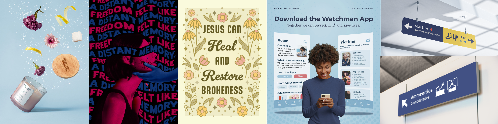

Welcome to the website!
Hi friend! On this site you can explore my art based on different mediums and types, learn more about me as an artist, and of course, reach out if you’d like to connect. I also share fun life updates here that you won't want to miss!
As an artist, I dive into the realms of conceptual design and mood sculpting, creating pieces that are vibrant and tell a story. I have a passion for distorted graphic expressionism, swiss style, and dreamcore aesthetics.

Life Updates
I'm excited to share that I'm currently working on another mural project with a local laundromat! They’re looking for a beautiful design featuring hummingbirds, lilies, and flower petals gently falling. I can't wait to share updates with you all as things progress!
On top of that, I'm still enjoying my studies at UNLV as an official graphic design student. I’m on track to graduate in spring 2027, and I’m loving every moment of it!
Click below to check out some of my work